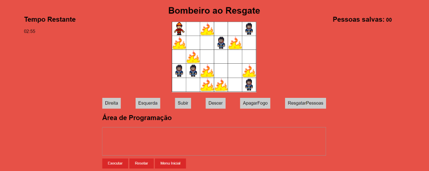

-

Um prédio está em chamas e você precisa guiar o bombeiro para salvar as pessoas que estão no prédio. Com apenas 7 minutos, selecione uma sequência de comandos para movimentar o bombeiro.
-
Para dar os comandos ao jogo, basta apenas selecionar o texto dos bloco desejados e arrastá-los para a área de programação. Após isso é só clicar em executar.
-
Para apagar o fogo, você deve usar o comando ApagarFogo antes do bombeiro entrar no apartamento e só então usar o comando para andar !
-
Você pode remover um comando da área de progrmação clicando nele, caso deseje remover todos, basta clicar em Resetar.
-
Para resgatar uma pessoa, basta fazer o bombeiro chegar até o apartamento dela e usar o comando ResgatarPessoas.